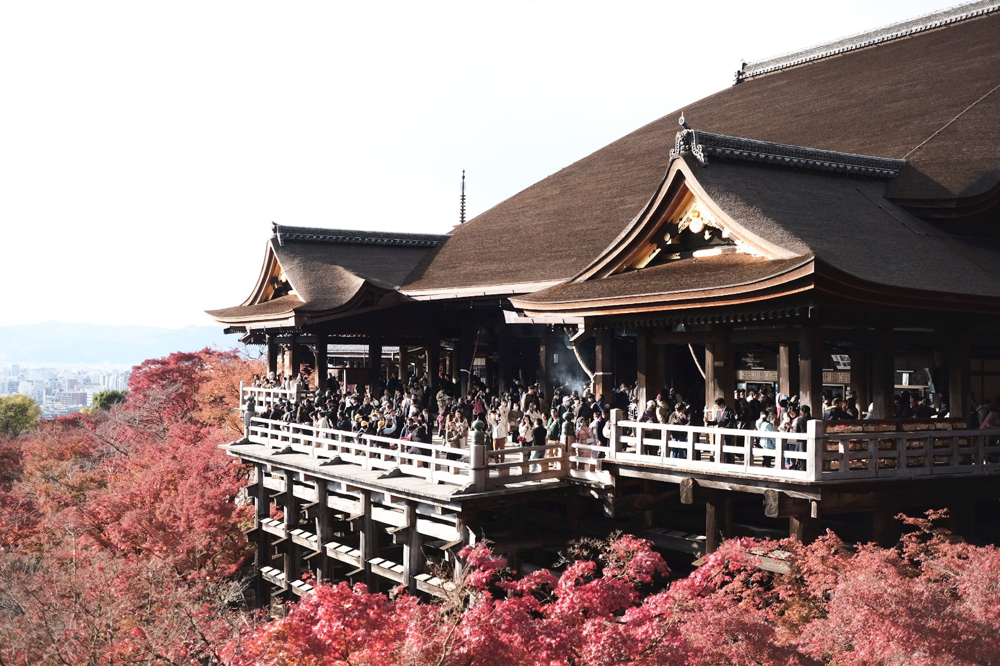

Welcome to Kyoto, the timeless heart of Japan, renowned for its rich history, stunning temples, and breathtaking natural beauty. As the former imperial capital, Kyoto offers a unique blend of ancient traditions and modern charm. From the serene Arashiyama Bamboo Grove to the iconic Fushimi Inari Shrine, Kyoto is a city that captivates the soul and inspires the senses
Join us on a journey through this enchanting city and discover the cultural treasures, exquisite gardens, and vibrant festivals that make Kyoto a must-visit destination.

Kiyomizu-dera temple in all its majestic glory as it overseas the forests of Kiyomizu
Photo by Japan Magazine
Kyoto, in all its majesty
- Fushimi Inari Shrine
- Kinkaku-ji (The Golden Pavilion)
- Arashiyma Bamboo grove
- kiyomizu-dera temple 
- gion district
Wander through the enchanting pathways of Fushimi Inari Shrine, where thousands of vibrant torii gates create a mystical tunnel leading up Mount Inari. This iconic landmark is a testament to Kyoto's spiritual heritage

Marvel at the breathtaking beauty of Kinkaku-ji, the Golden Pavilion, whose shimmering reflection in the tranquil pond and surrounding gardens epitomizes Kyoto's serene and timeless allure

Step into the tranquil Arashiyama Bamboo Grove, a lush and serene forest where towering bamboo stalks create an otherworldly atmosphere. A walk through this natural wonder is a must for any visitor to Kyoto
Experience the awe-inspiring Kiyomizu-dera Temple, perched on a hillside with panoramic views of Kyoto. Renowned for its wooden stage and stunning cherry blossoms, this UNESCO World Heritage site is a testament to Kyoto's historic beauty
Explore the historic Gion District, where traditional wooden machiya houses and the captivating geisha culture bring Kyoto's rich heritage to life. Enjoy authentic tea houses and cultural performances in this charming area